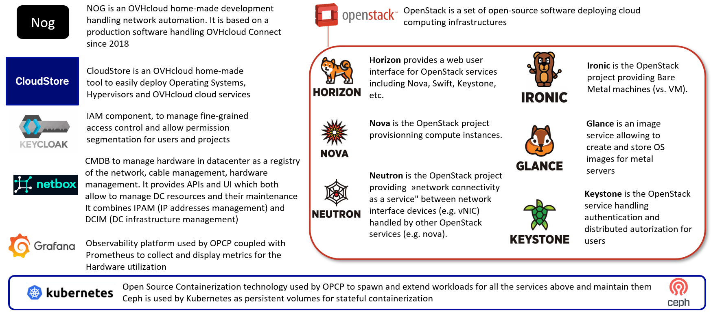

Core Concepts of OpenStack
OpenStack is a cloud operating system that controls large pools of compute, storage, and networking resources throughout a data center, all managed through a dashboard or via the command line interface. It's composed of independent services that work together to provide a complete cloud computing platform.
OPCP Core main components
Here are the main components running in OPCP controller, including OpenStack modules.

Understanding OpenStack Services
Nova - Compute Service
Nova is the core service responsible for managing and provisioning instances in OpenStack. It handles the lifecycle of instances including creation, scheduling, running, and termination. In OPCP, Nova can deploy baremetal by calling Ironic module.
Neutron - Networking Service
Neutron provides networking as a service for OpenStack. It allows users to define and manage virtual networks, subnets, routers, and firewalls. Neutron supports various network topologies and can integrate with physical network infrastructure.
Keystone - Identity Service
Keystone is OpenStack's identity service that provides authentication and authorization for all other OpenStack services. It manages users, tenants (projects), roles, and services. Keystone supports various authentication methods including username/password, tokens, and application credentials.
In OPCP Core, Keystone is federated by Keycloak, which is the Identity Provider for Layer 1. Both Keystone and Keycloak are running inside OPCP Controller.
Glance - Image Service
Glance serves as the image service in OpenStack, storing and retrieving virtual machine images. It supports various image formats and provides metadata management for images. Users can upload, download, and manage images that are used to create instances.
Key Concepts
Projects (Tenants)
Projects are organizational units in OpenStack where resources such as instances, networks, and volumes are grouped. Each project has its own set of users and permissions, allowing for resource isolation and management.
Endpoints
Endpoints are URLs that expose OpenStack services. Each service exposes HTTP endpoints that clients can query to interact with the service. These endpoints are listed in the Keystone service catalog after authentication.
Authentication
OPCP uses Keycloak as the IAM service and federates with OpenStack Keystone module. Users can authenticate using various methods including username/password, tokens, or application credentials. Once authenticated, users receive a token that grants access to OpenStack services.
How They Work Together
These services work together to provide a complete cloud computing platform. For example, when creating a new instance:
- Keystone authenticates the user and provides a token
- Neutron creates the necessary network connectivity
- Nova launches the virtual machine with the specified resources
- Glance provides the base image for the instance
Summary
- OpenStack consists of independent services that work together to provide cloud computing capabilities
- Nova manages virtual machines, Neutron handles networking, Keycloak and Keystone handles identity, and Glance manages images
- Resources are organized into projects for isolation and management
- All services communicate through standardized APIs accessible via endpoints